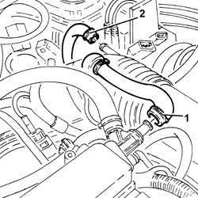
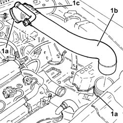
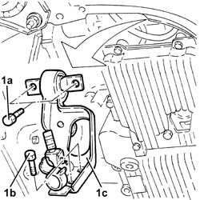
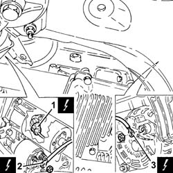
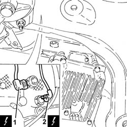
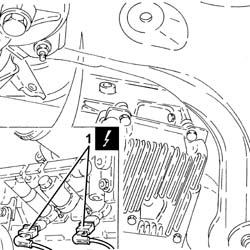
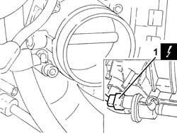
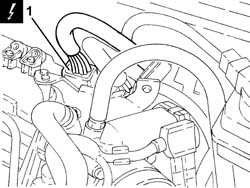
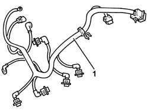

1056F95 INJECTOR CABLE LOOM - R.R.
- Path
- Procedures > 10 ENGINE > 1056 PETROL INJECTION SYSTEM > 1056F DIRECT PETROL INJECTION SYSTEM > 1056F95 INJECTOR CABLE LOOM - R.R.
- Kind
- repair procedure (removal / refitting; the operation number is the code)
- Applies to
- engines: 2.0 JTS, 2.0 JTS; all production periods
- Interactive page
- https://sloeber94.github.io/elrnDB-a156/en/#/3237747
Applies to: engines: 2.0 JTS, 2.0 JTS; all production periods
 Removing
Removing
 Refitting
RefittingPosition the vehicle on the ramp.
Proceed with removal 1016A40 ignition coil cover on cylinder head- r+r .
Proceed with removal 5530B10 battery - r+r .
1. Loosen the band and disconnect the oil vapour recirculation pipe from the cam cover.
2. Loosen the band and disconnect the vacuum pipe from the corrugated sleeve.

Applies to: engines: 2.0 JTS, 2.0 JTS; all production periods
1. Loosen bands (1a) and remove the rigid pipe (1b) with corrugated air intake sleeve (1c) from the air filter to the throttle body.

Applies to: engines: 2.0 JTS, 2.0 JTS; all production periods
Proceed with removal 7055B54 under-engine guard - r r .
Proceed with removal 1076B18 rigid section of exhaust pipe between catalytic converter and silencer - r + r .
1. Undo bolts (1a) (1b) and remove the modular inlet manifold mounting bracket (1c) after releasing the wiring from the bands on the bracket.

Applies to: engines: 2.0 JTS, 2.0 JTS; all production periods
1. Disconnect the electrical connection for the rpm sensor.
 | Name | Connector |
|---|---|---|
1 | Rpm sensor |
2. Disconnect the earth lead from the starter motor.
| Name | Connector |
|---|---|---|
2 | Starter' motor |
3. Disconnect the earth lead from the alternator
| Name | Connector |
|---|---|---|
3 | Alternator |

Applies to: engines: 2.0 JTS, 2.0 JTS; all production periods
1. Disconnect the electrical connection for the knock sensor.
| Name | Connector |
|---|---|---|
1 | Detonation sensor - 1 |
2. Disconnect the electrical connection for the insufficient engine oil pressure sensor.
| Name | Connector |
|---|---|---|
2 | Engine oil pressure sensor |

Applies to: engines: 2.0 JTS, 2.0 JTS; all production periods
1. Disconnect the electrical connections from the injectors.
| Name | Connector |
|---|---|---|
1 | Injector |

Applies to: engines: 2.0 JTS, 2.0 JTS; all production periods
1. Disconnect the electrical connection from the fuel vapour solenoid valve.
| Name | Connector |
|---|---|---|
1 | Fuel vapour recovery solenoid |

Applies to: engines: 2.0 JTS, 2.0 JTS; all production periods
1. Disconnect the electrical connector of the fuel injector wiring loom and release it from the mounting bracket.

Applies to: engines: 2.0 JTS, 2.0 JTS; all production periods
1. Release the injector wiring loom from its attachments and remove it.

Applies to: engines: 2.0 JTS, 2.0 JTS; all production periods
Refitting
RemovingRefit the injector wiring loom in its seating and secure it with its bands.
Connect the electrical connector for the injector wiring loom and secure it to the mounting bracket.
Connect the electrical connection to the fuel vapour solenoid valve.
Connect the electrical connections to the injectors.
Connect the electrical connection to the engine oil pressure warning sensor.
Connect the electrical connection for the knock sensor.
Connect the earth lead to the alternator.
Connect the earth lead to the starter motor.
Connect the electrical connection for the rpm sensor.
Place the modular intake manifold mounting bracket back in its housing and secure it using the bolts. Then secure the electrical wiring to the bands.
Proceed with refitting 1076B18 rigid section of exhaust pipe between catalytic converter and silencer - r + r .
Proceed with refitting 7055B54 under-engine guard - r r .
Place the rigid air supply pipe with corrugated air intake sleeve from the filter to the throttle body back in its housing and secure it using the bands.
Connect the vacuum pipe to the corrugated hose and tighten the band.
Connect the oil vapour recirculation pipe to the tappet cover and secure with a band.
Proceed with refitting 5530B10 battery - r+r .
Proceed with refitting 1016A40 ignition coil cover on cylinder head- r+r .
Remove the car from the ramps.
Topics linked from this page (11)
- 1016A40 ignition coil cover on cylinder head- r+r
- 1076B18 rigid section of exhaust pipe between catalytic converter and silencer - r + r
- 5530B10 battery - r+r
- 7055B54 under-engine guard - r r
- A10 Alternator
- A20 Starter' motor
- K30 Engine oil pressure sensor (switch)
- K46 Rpm sensor
- K50 Detonation sensor - 1
- L10 Fuel vapour recovery solenoid
- N70 Injector